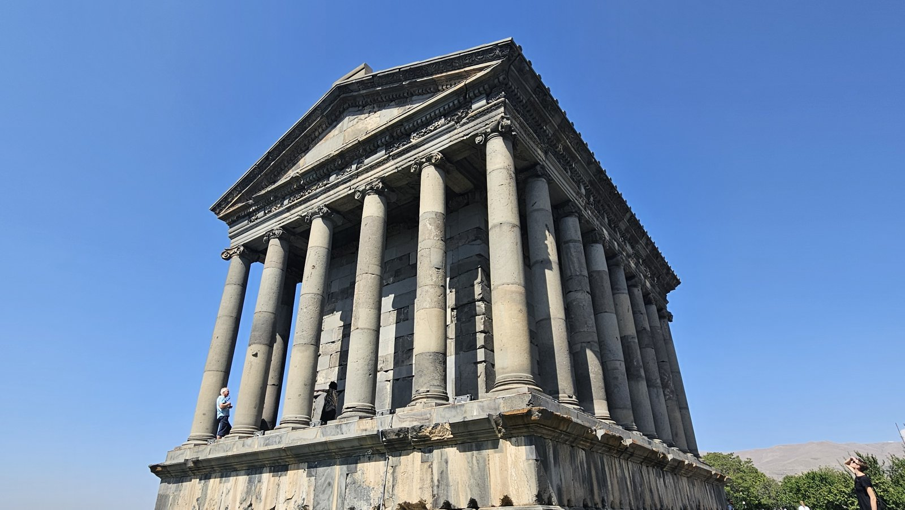
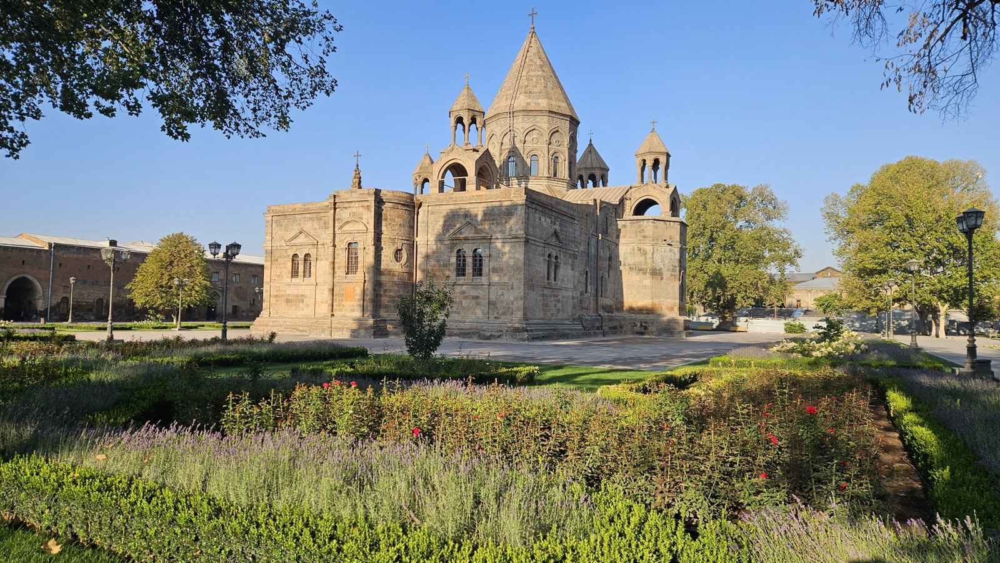
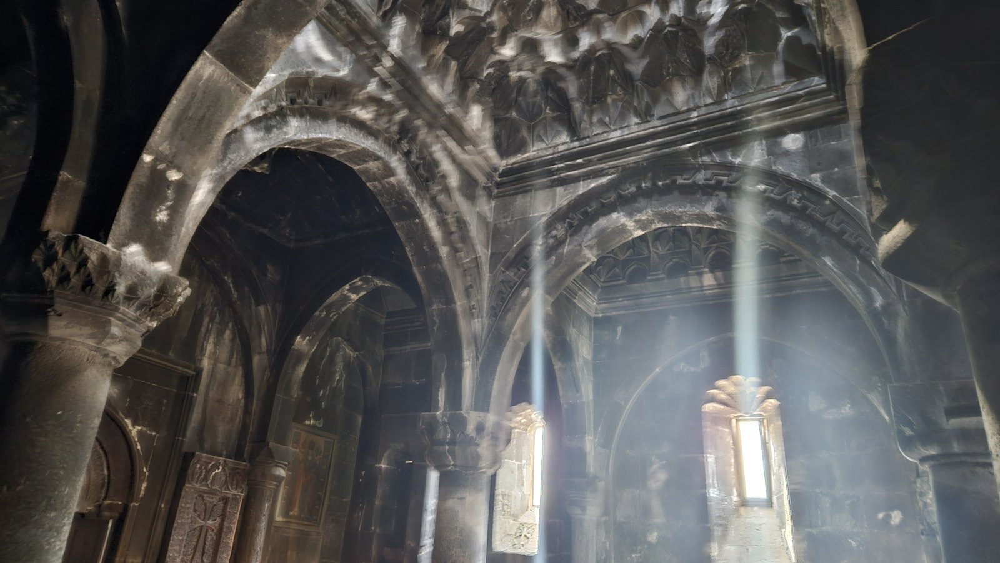
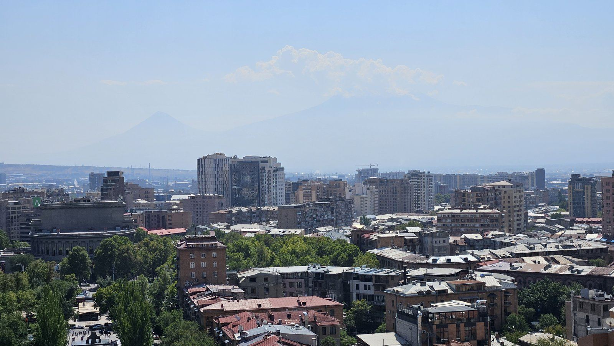
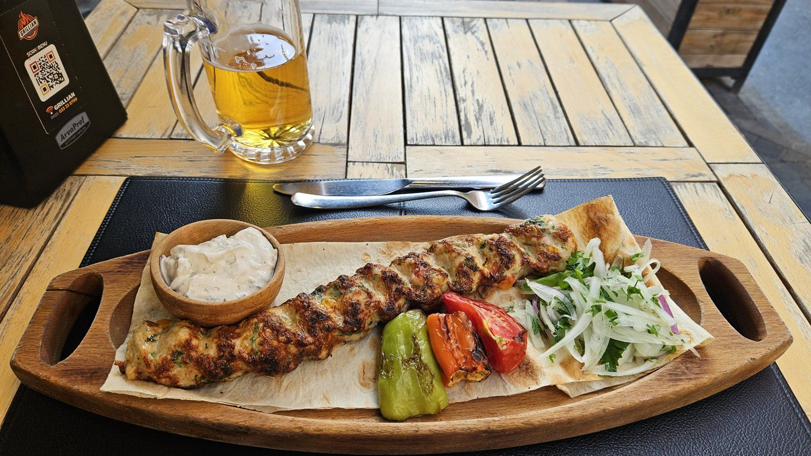
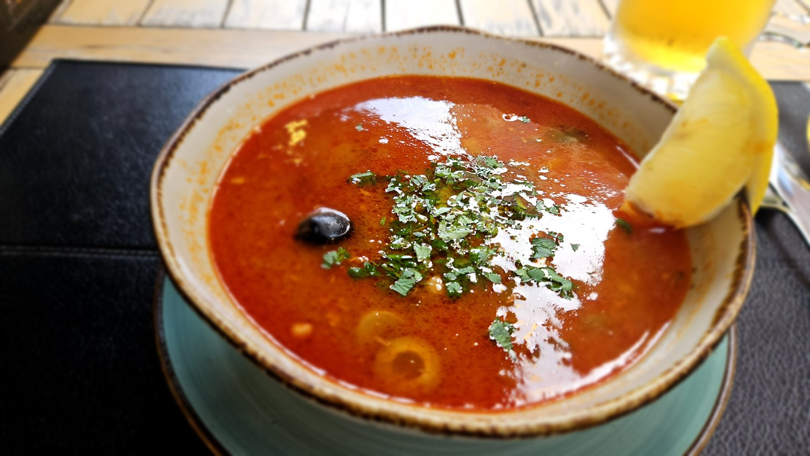

Z cest
Arménie za prodloužený víkend: Jerevan, Ečmiadzin, Garni a Geghard maršrutkou
Destinace a úvod
Do Arménie jsem letěl sám, 11.–15. září 2024. Lákaly mě chrámy a historie a odvezl jsem si i to, že je tam na naše poměry levně.

Letenka
Letěl jsem Wizz Airem z Vídně do Jerevanu, letenka stála asi 1 500 Kč (2024). Na letiště ve Vídni jsem jel S-Bahnem z Floridsdorfu.
Počítejte s tím, že lety jsou v nočních hodinách: do Jerevanu jsem přiletěl brzy ráno, zpátky jsem odlétal v noci. Ranní přílet je dost únavný.
Salonky
Na letišti Zvartnoc jsem před nočním odletem šel do salonku přes LoungeKey. Teplé jídlo tam nebylo, zato nabízeli sedmiletý koňak Ararat a arménské víno.
Ubytování
Bydlel jsem v Jerevanu v Sayat Nova Apartment, rezervovaném přes Booking. Za celý pobyt jsem zaplatil 2 300 Kč (2024).
Místní doprava
Taxi po Jerevanu stálo maximálně 100 Kč, spíš kolem 50 Kč za jízdu (2024).
Maršrutky jsou v pohodě a velmi levné. Jen je potřeba zjistit, odkud jezdí. Ke Garni a Geghardu jsem jel maršrutkou č. 266 z této zastávky. Podle ceníku v maršrutce stála jízda Garni – Jerevan 500 AMD a Garni – Geghard 300 AMD (2024).
Kdo nechce řešit maršrutky, najde v centru Jerevanu nabídky organizovaných výletů. V září 2024 stál výlet Garni + Geghard + Symfonie kamenů + Charencův oblouk 12 000 AMD, Sevan + Dilidžan 10 000 AMD a Chor Virap + Noravank 8 000 AMD. Já jsem jel sám maršrutkou.
Program po dnech
Den 1 – 12. 9. 2024: Zvartnoc, Ečmiadzin a Kaskáda
Trasa: Letiště Zvartnoc – Zvartnoc – Ečmiadzin – Jerevan, Kaskáda
Přiletěl jsem kolem čtvrté ráno. Na letišti jsem počkal na východ slunce a pak jel taxíkem rovnou na chrámy cestou do Jerevanu. Jen pozor: tak brzy ráno jsou chrámy zavřené. U Zvartnocu jsem stál u brány (vstup pro cizince 1 500 AMD, prohlídka s průvodcem 5 000 AMD, 2024), za ním se nad krajinou zvedal Ararat.
Pak Ečmiadzin: kostel sv. Gajané s chačkary, katedrála a kostel sv. Hripsimé.

Odpoledne v Jerevanu Kaskáda – obří schodiště se sochami Fernanda Botera a eskalátory uvnitř, nahoře výhled na celé město a park s ruským kolem. Cestou zpět kolem opery. Káva ze stánku v centru: espresso 600 AMD, cappuccino 800 AMD (2024).
Den 2 – 13. 9. 2024: Geghard, Garni a Symfonie kamenů
Trasa: Jerevan – Geghard – Garni – Symfonie kamenů
Maršrutkou č. 266 přes Garni až ke klášteru Geghard. U vstupu prodávají gatu a další sladkosti. Klášter je částečně vytesaný do skály a uvnitř padají ze stropu paprsky světla. Kupole byla v lešení.

Z Geghardu zpátky do Garni k antickému chrámu nad soutěskou a dolů do soutěsky k Symfonii kamenů – čedičovým sloupům, které vypadají jako varhany. Zpátky do Jerevanu opět maršrutkou.
Večer trh se suvenýry Vernisáž a Severní třída. Večeře v restauraci Grillian (viz Kde jsem jedl).
Den 3 – 14. 9. 2024: Jerevan
Trasa: Krytý trh – Náměstí republiky – Modrá mešita – Kaskáda
Krytý trh s lavašem a zeleninou, Náměstí republiky s Historickým muzeem a fontánami, Modrá mešita. Odpoledne jsem se vrátil na Kaskádu – tentokrát byl nad městem krásně vidět Ararat.

Den 4 – 15. 9. 2024: odlet
Odlet v noci, předtím salonek na letišti (viz Salonky).
Kde jsem jedl
Jejich šašlik je snad výborný všude a moc mi chutnal i jejich boršč.
Grillian (Jerevan) – byl jsem tu 12. i 13. září. Účet z 13. září: pivo Kilikia 0,5 l za 800 AMD, soljanka 1 800 AMD, kebab 1 500 AMD, k tomu 10 % servis. Celkem 4 510 AMD (2024).


Náklady
| Položka | Kdy | Částka |
|---|---|---|
| Letenka Wizz Air Vídeň – Jerevan | 2024 | cca 1 500 Kč |
| Sayat Nova Apartment, celý pobyt | 2024 | 2 300 Kč |
| Taxi po Jerevanu, jedna jízda | 2024 | 50–100 Kč |
| Maršrutka Garni – Jerevan | 2024 | 500 AMD |
| Maršrutka Garni – Geghard | 2024 | 300 AMD |
| Zvartnoc, vstup pro cizince | 2024 | 1 500 AMD |
| Večeře v Grillian (soljanka, kebab, pivo) | 2024 | 4 510 AMD |
| Organizovaný výlet Garni + Geghard (pro srovnání) | 2024 | 12 000 AMD |
Ostatní jídlo a drobné útraty jsem nesledoval.
Postřehy
Chrámy a historie stojí za cestu, ceny jsou na naše poměry dobré.
V obchodě se dá za dobrou cenu koupit pravý kaviár.
Maršrutky jsou levné a fungují, jen si dopředu zjistěte, odkud jezdí.
Taxi po Jerevanu stojí kolem 50 Kč za jízdu.
Co bych udělal jinak
Ranní přílet je dost únavný. Když chcete jet z letiště rovnou na chrámy, počítejte s tím, že brzy ráno jsou zavřené.